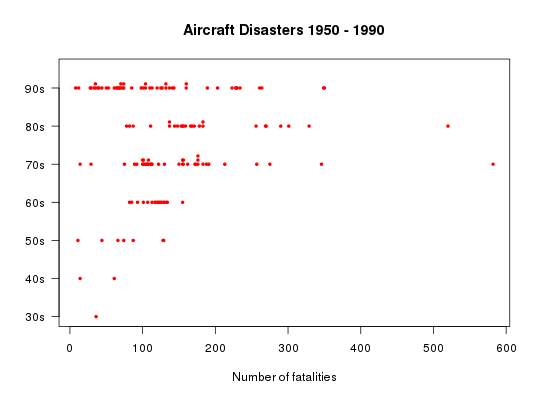

Data used in Exercise 1.12
Airdisasters
A data frame /tibble with 141 observations on the following seven variables
a numeric vector indicating the year of an aircraft accident
a numeric vector indicating the number of deaths of an aircraft accident
a character vector indicating the decade of an aircraft accident
2000 World Almanac and Book of Facts.
Kitchens, L. J. (2003) Basic Statistics and Data Analysis. Pacific Grove, CA: Brooks/Cole, a division of Thomson Learning.
par(las = 1) stripchart(deaths ~ decade, data = Airdisasters, subset = decade != "1930s" & decade != "1940s", method = "stack", pch = 19, cex = 0.5, col = "red", main = "Aircraft Disasters 1950 - 1990", xlab = "Number of fatalities")par(las = 0)